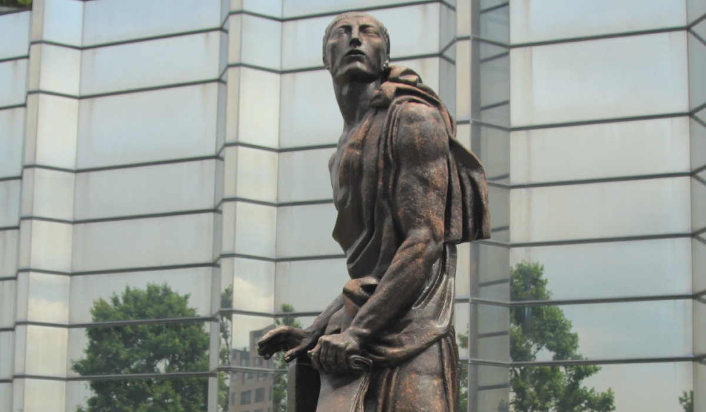
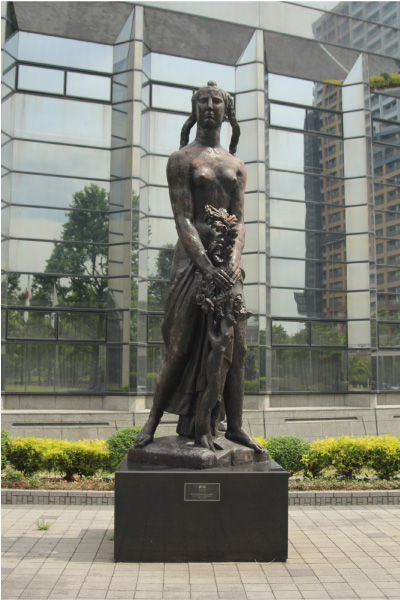
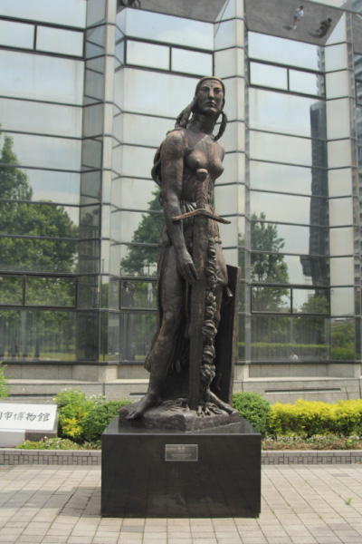
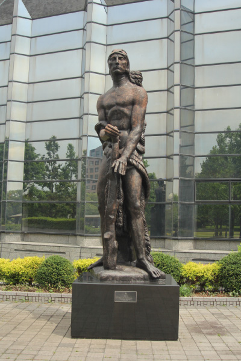
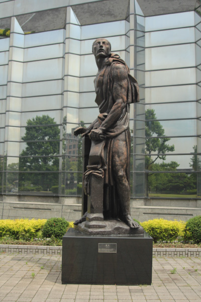

エミール・アントワーヌ・ブールデル
   
ブールデルは、「近代彫刻の父」と称されるオーギュスト・ロダンの助手として共に仕事をし、独
立後はロダンの後継者としての地位を確立していった。フランスのモントーバンに生まれ、幼い頃
から家具職人の父の仕事を手伝い、木彫りの技術などを習得した。この4体の像は福岡市が市制100
年を記念して購入。アルゼンチン大統領、アルベール将軍の記念碑の一部として制作されたもので、
全部で8組作られたうち、福岡市博物館のものは「雄弁」が6組目、他の3体は7組目に鋳造された。